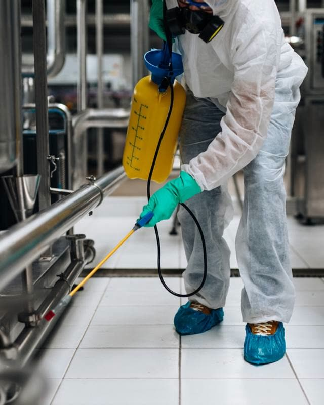
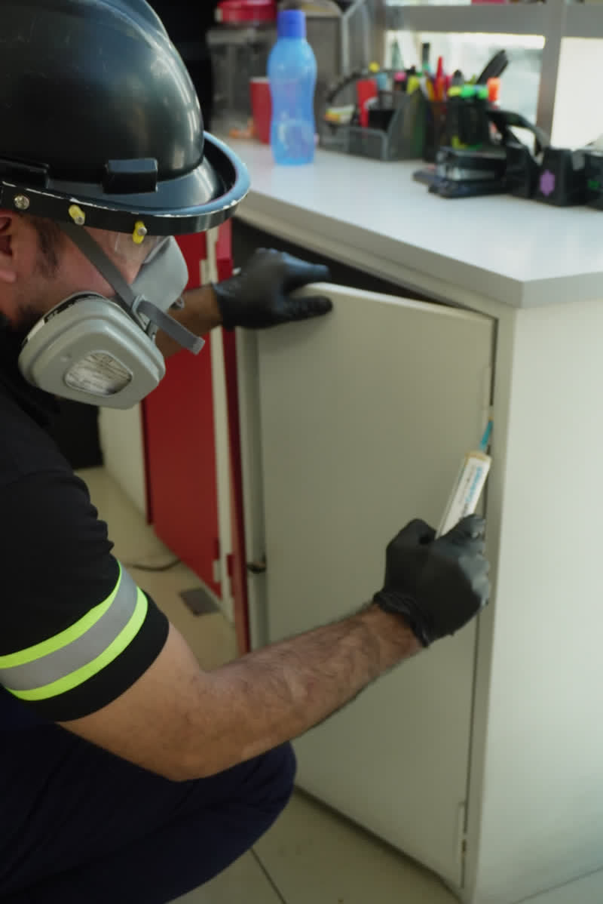
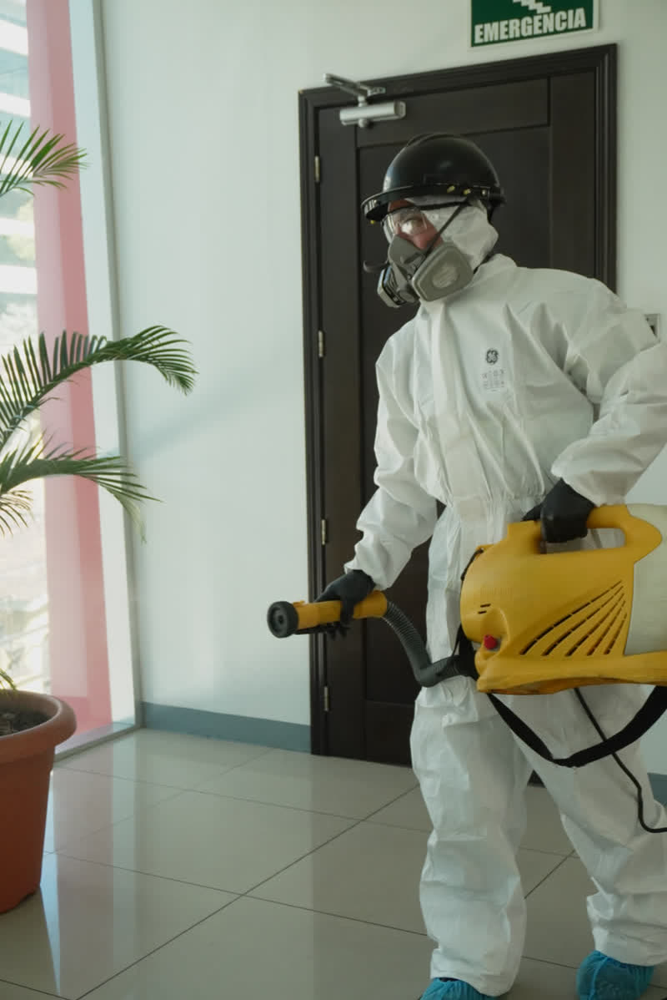
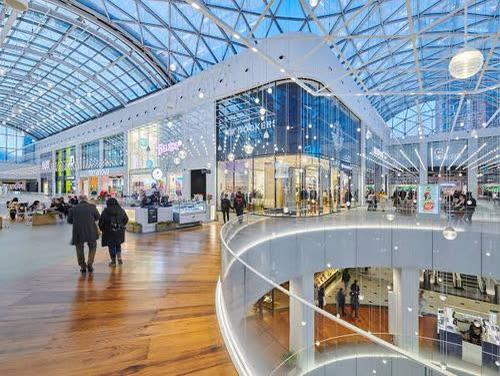
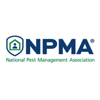
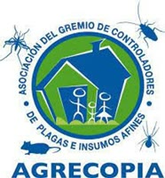

Plantas industriales
Control preventivo para líneas de producción, almacenes de materia prima y zonas de carga.
Solicitar cotizaciónRestaurantes · bodegas · plantas · edificios · oficinas
Control de plagas para empresas en Guatemala. Primero encontramos de dónde viene la plaga. Después la controlamos en tu horario y te dejamos un reporte firmado en cada visita.
4 datos, menos de un minuto · Te llamamos para cotizar

01 · Inspección
Revisamos gabinetes, cocinas y puntos críticos antes de tratar.

02 · Aplicación dirigida
Tratamiento en zócalos, pasillos y oficinas sin detener tu operación.

03 · Nebulización
Niebla fina que alcanza follaje y rincones donde se refugian mosquitos y plagas voladoras.

04 · Sanitización
Desinfección de oficinas y áreas de trabajo con equipo de protección completo.

05 · Áreas exteriores
Control en terrazas, jardines y áreas verdes del inmueble.
Si alguna de estas te suena, no es mala suerte: la plaga tiene una entrada que nadie ha encontrado.
Viste una cucaracha en la cocina justo la semana de la inspección.
Aparecen cajas o tarimas mordidas en la bodega y nadie sabe por dónde entran.
Ya fumigaron, pero a las pocas semanas volvieron.
El auditor pide el reporte del control de plagas y tu proveedor no lo deja.
La plaga no llega por mala suerte. Entra por un lugar que nadie ha revisado. Nosotros empezamos justo ahí.
Estas son las plagas que más atendemos. Toca la tuya y te llevamos a la cotización con el dato ya marcado. ¿No aparece? Elige “otra” en el formulario y te confirmamos si la atendemos.
Echar químico sin saber por dónde entra la plaga es pagar dos veces.
Revisamos tu instalación para ver qué plaga hay, dónde se esconde y por dónde entra.
Medimos qué tan grave es (alto, medio o bajo) y elegimos el tratamiento para esa plaga y ese espacio.

Aplicamos en tu horario, con productos con registro sanitario y equipo de nebulización ULV, estaciones o lámparas UV según el caso.
Volvemos cada quince días o cada mes a revisar estaciones. Si la plaga reaparece entre visitas, mandamos un refuerzo.
Lo que cambia cuando el control de plagas deja de ser un problema tuyo.
Reporte firmado en cada visita y carpeta técnica con fichas, hojas de seguridad y registros sanitarios.
Vamos en el horario que menos afecta tu cocina, tu bodega o tu planta.
Servicio en 24 horas o menos. En emergencias dentro de la capital, en menos de 1 hora.
Capacitamos sin costo a tu personal, en persona o en línea, para que la plaga no encuentre comida ni entrada.
Cada espacio tiene sus puntos críticos. Adaptamos el programa a tus horarios de operación y a los requisitos de inocuidad de tu sector.

Control preventivo para líneas de producción, almacenes de materia prima y zonas de carga.
Solicitar cotizaciónTratamientos coordinados con tus horarios para no interrumpir la cocina ni a tus huéspedes.
Solicitar cotizaciónMonitoreo de roedores e insectos rastreros que protege tu mercadería y tus tarimas.
Solicitar cotización
Programas para áreas comunes, locales, patios de comida y zonas de descarga.
Solicitar cotizaciónControl en áreas comunes, ductos, sótanos y cuartos de basura de todo el edificio.
Solicitar cotizaciónControl perimetral y de áreas comunes pensado para toda la comunidad.
Solicitar cotización
Protocolos cuidadosos para áreas sensibles, bodegas médicas y zonas de pacientes.
Solicitar cotizaciónVisitas discretas que se adaptan a tu jornada laboral y a tu equipo.
Solicitar cotizaciónLicencia sanitaria y licencia ambiental. Miembros de:


Técnicos con diploma del Ministerio de Salud.
Identificados con polo reflectivo y carné.
Somos parte de The People Company. Operamos desde la Zona 13 de la capital con un coordinador de operaciones, 3 supervisores y 7 técnicos.
No. Fumigamos por áreas y en tu horario de menos movimiento. Solo pedimos que nadie esté en el área tratada y esperar 1 hora para volver a entrar.
Usamos productos con registro sanitario. Cada ficha técnica y hoja de seguridad queda en tu carpeta técnica, para ti y para el auditor.
Puede pasar: las plagas también entran con cajas y mercadería. Si reaparece entre visitas, mandamos un refuerzo.
Depende del tamaño, la plaga y cada cuánto vamos. Te damos el precio exacto sin costo y sin compromiso. El precio por visita es el mismo en una visita suelta o en un plan.
Reporte firmado con productos, áreas y horas. Carpeta técnica con fichas, hojas de seguridad y registros sanitarios. Cuando llega el auditor, ya está todo.
Preferimos decírtelo antes que cobrarte un servicio que no es el nuestro.
Salimos desde la Zona 13 de la capital. Fuera de ella también vamos; el precio incluye viáticos.
¿Tu duda no está aquí? Escríbela en el formulario y te la contestamos al llamarte.
Nadie puede garantizarlo con honestidad: las plagas también entran con cajas, mercadería o por falta de limpieza. Lo que sí hacemos: si la plaga reaparece entre visitas, mandamos un refuerzo.
Normalmente atendemos en 24 horas o menos. En emergencias dentro de la capital llegamos en menos de 1 hora. De lunes a jueves hay más disponibilidad.
Por transferencia bancaria y con factura. Por seguridad, nuestros técnicos no reciben efectivo ni cheques.
Sí. Las casas tienen sus propias indicaciones, por ejemplo el tiempo que las mascotas deben estar fuera. Las explicamos en la página de fumigación de casas.
Sí, en Quetzaltenango y Antigua Guatemala, y evaluamos otros lugares. Fuera de la capital el precio incluye viáticos.
¿Prefieres llamar? 2307-4727